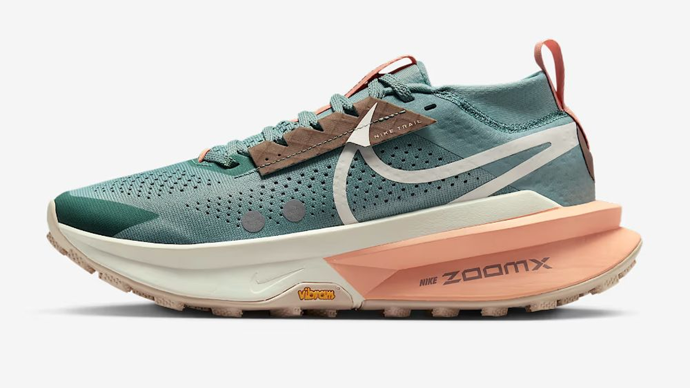

00
:
00

La barre restera collée en bas de la fenêtre, même pendant le défilement. Si elle doit seulement être poussée en bas lorsque le contenu est court, sans rester fixe pendant le scroll, utilise plutôt :